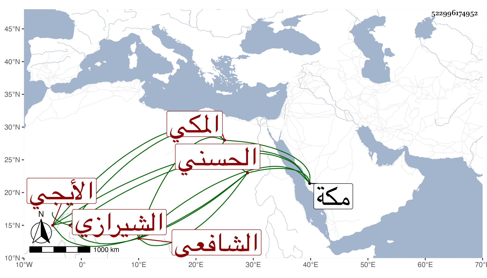

0902Sakhawi.DawLamic.ITO20230111-ara1.EIS1600.522996174952
Biography ID: 522996174952
350
حبيب الله بن عبيد الله بن العلاء محمد بن محمد الحسني الأيجي الشيرازي المكي الشافعي وأمه السيدة بديعة ابنة النور أحمد بن السيد صفي الدين عم أبيه ويعرف كأبيه وجده بابن السيد عفيف الدين ، ولد فطن لبيب قارب المراهقة سمع علي في مكة بل قرأ علي يسيرا وكان مشتغلا بالقرآن والنجابة عليه لائحة مات في سنة ثمان وثمانين عوضه الله وأبويه الجنة .
